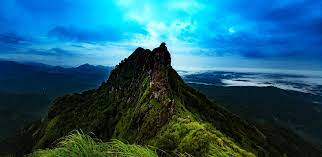
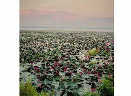

Kottayam is a city in the Indian state of Kerala, flanked by the Western Ghats on the east and the Vembanad Lake and paddy fields of Kuttanad on the west. It is the district headquarters of Kottayam district, located in south-west Kerala. Wikipedia
Area: 137.6 km²
Weather: 30°C, Wind W at 8 km/h, 75% Humidity More on weather.com
Local time: Thursday, 12:49 pm
Neighborhoods:Kottayam, Devalokam, S.H. Mount, MORE
District:Kottayam
Elevation: 3 m (10 ft)
HDI: 0.831
|  |  | |
|
| Illikkal Kallu | Malarickal Water Lilly Pad Flower Fields | Vembanad Lake | Kottayam Town |